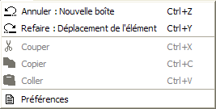

Le menu Edition contient les choix d'annulation et les choix classiques de Couper-Copier-Coller.
Les choix "Annuler" et "Refaire" sont suivis du nom de la commande pouvant être annulée ou rééxécutée, respectivement. Le nombre de commandes pouvant être annulées peut être défini dans la boîte de dialogue des préférences.
Le choix "Préférences" permet d'ouvrir la boîte de dialogue des préférences.